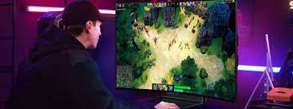
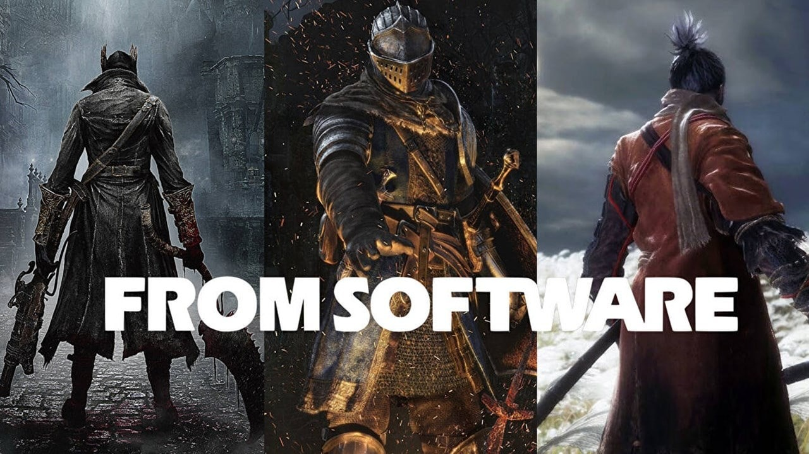

LG anuncia TV gamer curva que pode ser dobrada
Postado dia 01/09/2022 por MARCELO JUNIOR Na era dos smartphones dobráveis, a LG apresentou uma nova inovação durante sua conferência na IFA 2022: uma TV gamer OLED de 42 polegadas que pode ser dobrada pelo usuário.
Essa não é a primeira vez que a companhia se destaca nesse segmento e, aliás, é uma das principais marcas no desenvolvimento de displays flexíveis da indústria. Há poucos dias, a Corsair anunciou um produto parecido, um monitor gamer dobrável com tecnologia da LG.
Chamada de LG OLED Flex LX3, a TV tem 20 tipos de ajustes de curvatura de imagem, podendo ir de um display totalmente plano até uma tela curva de 900R, que deve englobar boa parte do campo de visão do jogador.
O aparelho possui uma ferramenta externa na parte traseira que permite ser dobrada, e segundo a marca, não compromete a qualidade de imagem durante a transformação do plano para o curvo. Aliás, essa mudança pode ser feita de forma manual ou através de um comando no controle remoto. A área da LG LX3 pode ser ajustada para diferentes tipos de games, com opções de redução de tamanho para 27 ou 32 polegadas.
Dentre as especificações, o modelo opera em resolução 4K com taxa de atualização de 120Hz, e porta HDMI 2.1, suportando os consoles atuais. Na parte frontal, ainda há dois alto-falantes com 40W de potência e integração com Dolby Atmos.
Por ser smart, o televisor também tem suporte a um HUB central da LG para o usuário assistir streamings como Netflix, HBO Max, Prime Video, etc, além de serviços de jogos em nuvem e outras interações.
Por enquanto a LG OLED Flex LX3 não teve data ou preços revelados, e não tem nenhuma previsão para chegar ao varejo internacional.
SONY e TENCENT compram 30% da From Software
Postado dia 31/08/2022 por MARCELO JUNIOR Em uma ação que talvez tenha pego muitos jogadores de surpresa, foi revelado que a Sony e a Tencent compraram 30% da From Software, empresa responsável por grandes sucessos como Dark Souls e Elden Ring.
Um dos que divulgou essa informação foi Gearoid Reidy, colunista do site Bloomberg. Em mensagem publicada em seu perfil no Twitter, ele mencionou que a Sixjoy Hong Kong (uma subsidiária da Tencent) vai ficar com 16,25% das ações, enquanto a Sony será detentora de 14,09%. O investimento combinado das duas foi de aproximadamente 36,4 bilhões de ienes.
Outro ponto importante dessa transação é que a Kadokawa Corporation ainda segue como a principal acionista da produtora, com 69,66% dos ativos. Vale ressaltar, entretanto, que a fabricante do PlayStation possui uma parte das ações da Kadokawa.
O que muda com isso?
Se essa é a pergunta que você está se fazendo neste momento, fique tranquilo: esse acordo não vai gerar nenhum tipo de exclusividade para os games da From Software. Porém, o documento relacionado à aquisição das ações menciona que o dinheiro recebido pela empresa de Elden Ring vai ajudar a "estabelecer uma estrutura que permita a expansão do escopo de publicação da própria From Software no mercado global".
Com isso em mente, a estratégia vai permitir que a From Software seja a criadora e distribuidora de seus próprios projetos, sem a necessidade de agir em conjunto com a Bandai Namco ou a Activision.